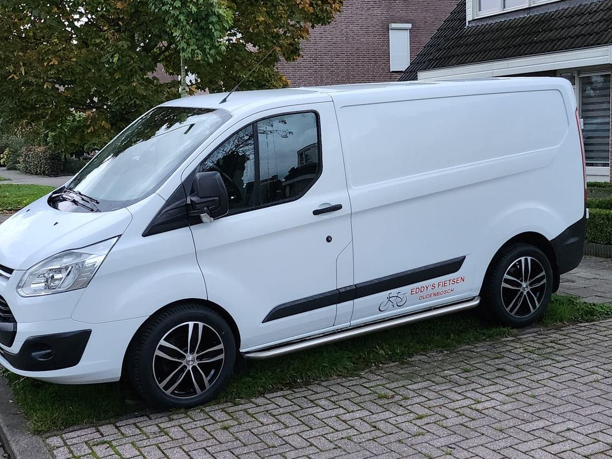

Werkplaats en tarieven
Breng je fiets aan het begin van de openingstijd, of de avond ervoor. Ik probeer hem dezelfde dag klaar te hebben.
Tarieven onderhoudsbeurt
Vaste prijzen, exclusief onderdelen en eventueel meerwerk. Extra werk altijd in overleg.
Stadsfiets
- Controle verlichting
- Remmen en versnelling afstellen
- Naven, assen en balhoofd afstellen
- Stuurinrichting en banden
- Kabels smeren (indien nodig)
- Ketting en tandwielen reinigen en smeren
- Spaken spannen en wielen richten
- Alle bouten en moeren natrekken
Elektrische fiets
- Alles van de beurt voor een stadsfiets
- Controle van de contactpunten
- Beschermen tegen weersinvloeden
- Software-update (indien mogelijk)
Racefiets of mountainbike
- Wielnaven afstellen en smeren
- Balhoofd en trapas afstellen
- Versnelling en remmen afstellen
- Stuurinrichting en banden
- Ketting en tandwielen reinigen en smeren
- Spaken spannen, bouten en moeren
Zo plan je het
- Maak een afspraakVoor een beurt of grotere reparatie, zoals een nieuwe ketting en tandwielen. Kies een dag waarop de werkplaats open is.
- Breng je fiets op tijdAan het begin van de openingstijd, of de werkdag ervoor. Wachten op de reparatie kan niet.
- OphalenIn principe dezelfde dag klaar. Of ik breng hem terug met de haal en breng service.
Lekke band of een ketting die eraf loopt? Dan mag je je fiets ook zonder afspraak brengen.
Haal en breng service
Vast tarief per rit (halen of brengen):
- Oudenbosch € 5
- Bosschenhoofd € 5
- Hoeven € 5
- Zegge € 5
- Standdaarbuiten € 7,50
- Oud-Gastel € 7,50
- Rucphen € 10
- St. Willebrord € 10
- Roosendaal € 12,50
- Etten-Leur € 12,50
Andere plaatsen in overleg.
E-bikes: welke systemen?
Eddy's fietsen is gecertificeerd Bosch e-bike servicepunt. Ook voor Shimano Steps, Bafang en Panasonic heb ik diagnose-apparatuur en servicecertificaten. Bij een storing blijft de fiets even bij mij, omdat het zoeken naar de oorzaak vaak meer tijd kost.
Voor alle fietsen geldt: banden, ketting, remmen en versnelling kan ik altijd repareren of vervangen.
Systemen in de werkplaats
Uitlezen, updaten en storingen opsporen:
Stella of Amslod met een Bosch-systeem? Dan kan ik volledig onderhoud doen. Voor sommige Stella- en Amslod-modellen kan ik ook vervangende onderdelen krijgen.
Afspraak maken
Overdag sta ik in de werkplaats: stuur dan liever een WhatsApp, sms of e-mail. Na 18 uur kun je gewoon bellen.
Eddy's fietsen
| Maandag | 13.00 – 20.30 |
| Dinsdag | 18.30 – 20.30 |
| Woensdag | 13.30 – 18.30 |
| Donderdag | gesloten |
| Vrijdag | 18.30 – 20.30 |
| Zaterdag | 9.00 – 12.00 |
| Zondag | gesloten |
Buiten deze tijden alleen op afspraak.